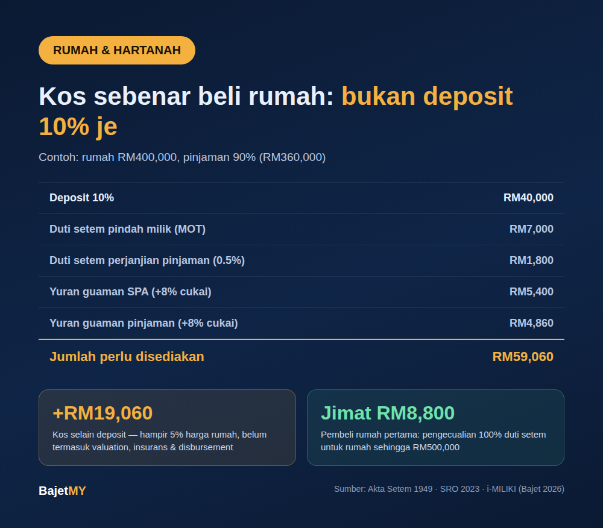

Ramai yang simpan untuk deposit 10% dan anggap itu dah cukup. Tapi bila tiba masa tandatangan, baru perasan ada duti setem dan yuran guaman — yang boleh cecah belasan ribu ringgit lagi. Jom kira betul-betul.

Kos-kos utama selain harga rumah
1. Deposit (downpayment) Biasanya 10% jika bank luluskan pinjaman 90%. Untuk rumah RM400,000, itu RM40,000.
2. Duti setem pindah milik (MOT) Dikenakan ikut harga rumah, secara berperingkat (untuk warganegara/PR):
| Harga rumah | Kadar |
|---|---|
| RM100,000 pertama | 1% |
| RM100,001 – RM500,000 | 2% |
| RM500,001 – RM1,000,000 | 3% |
| Selebihnya | 4% |
3. Duti setem perjanjian pinjaman 0.5% daripada jumlah pinjaman.
4. Yuran guaman — SPA dan perjanjian pinjaman Ikut skala Solicitors' Remuneration Order 2023: 1.25% bagi RM500,000 pertama (minimum RM500), 1% selebihnya, ditambah cukai perkhidmatan 8%. Ada dua set yuran — satu untuk Perjanjian Jual Beli (SPA), satu untuk perjanjian pinjaman.
5. Kos lain Seperti disbursement guaman, penilaian (valuation), insurans (MRTA/MLTA), dan kos pindah. Ini berbeza-beza, jadi sediakan sedikit ruang tambahan.
Contoh: rumah RM400,000, pinjaman 90%
| Perkara | Jumlah |
|---|---|
| Deposit 10% | RM40,000 |
| Duti setem MOT | RM7,000 |
| Duti setem perjanjian pinjaman (0.5% × RM360,000) | RM1,800 |
| Yuran guaman SPA (termasuk 8% cukai) | RM5,400 |
| Yuran guaman pinjaman (termasuk 8% cukai) | RM4,860 |
| Jumlah perlu disediakan | RM59,060 |
Maksudnya, selain deposit, ada RM19,060 lagi — hampir 5% daripada harga rumah — belum termasuk kos lain.
Pembeli rumah pertama? Boleh jimat duti setem
Di bawah pengecualian pembeli rumah pertama (i-MILIKI), warganegara yang tidak pernah memiliki rumah kediaman boleh dapat pengecualian 100% duti setem — untuk MOT dan perjanjian pinjaman — bagi rumah berharga sehingga RM500,000, dengan SPA ditandatangani antara 1 Januari 2026 hingga 31 Disember 2027.
Untuk contoh RM400,000 di atas, ini menjimatkan RM8,800. Jumlah perlu disediakan turun kepada RM50,260. Yuran guaman masih perlu dibayar.
Tips sebelum beli
- Simpan lebih daripada 10% — sasarkan sekurang-kurangnya 15% harga rumah untuk deposit dan kos permulaan.
- Semak kelayakan pembeli rumah pertama sebelum tandatangan SPA — tarikh SPA menentukan kelayakan.
- Minta sebut harga daripada peguam awal supaya tak terkejut dengan disbursement.
- Jangan kosongkan dana kecemasan untuk bayar kos beli rumah — rumah baru selalu ada kos tak dijangka.
Guna Kalkulator Kos Beli Rumah Bajet MY untuk kira berdasarkan harga rumah dan margin pinjaman korang sendiri.
Sumber
- Akta Setem 1949 — kadar duti setem pindah milik
- Solicitors' Remuneration Order 2023 (Jadual A, Semenanjung Malaysia)
- Pengecualian duti setem pembeli rumah pertama (i-MILIKI), Bajet 2026